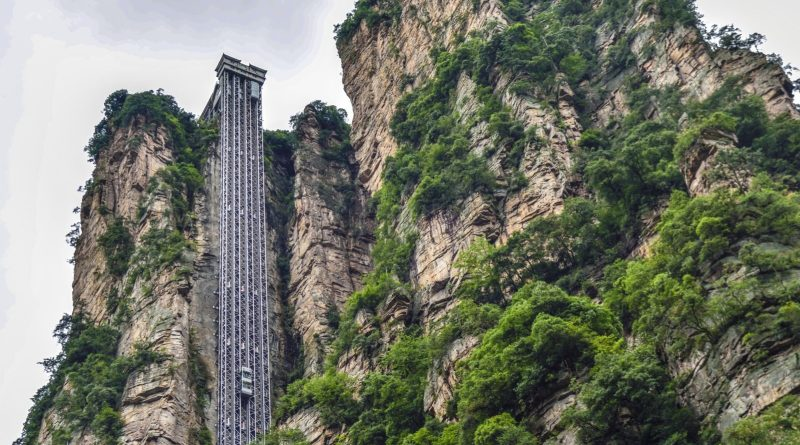
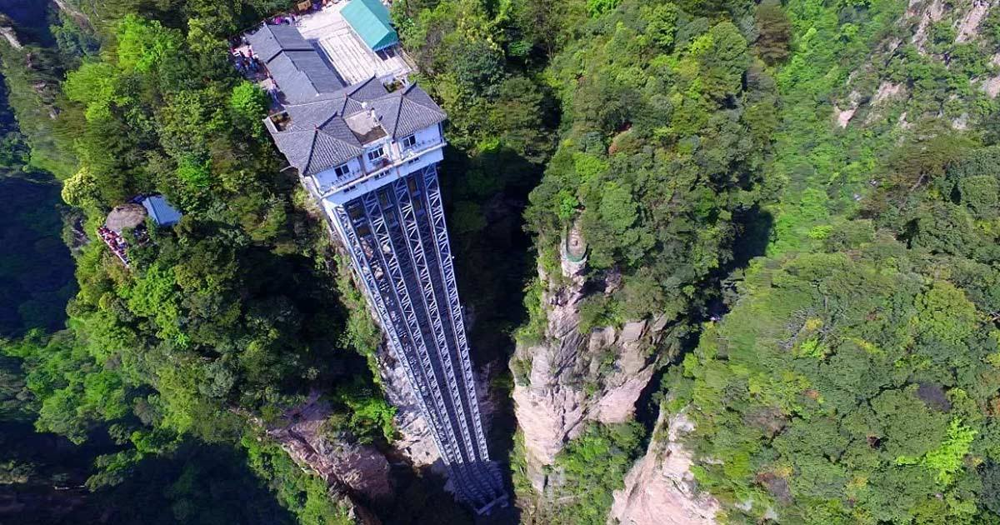
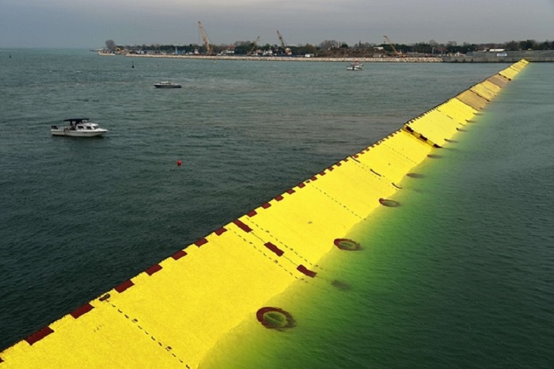
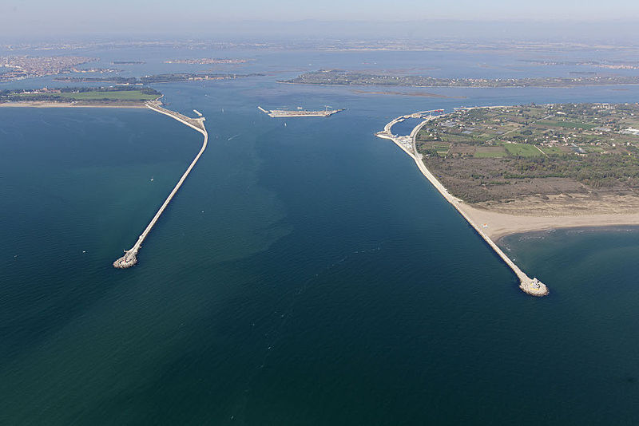
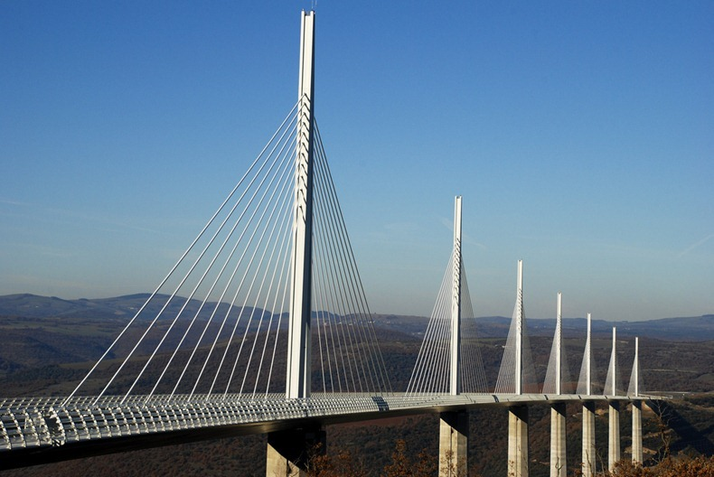
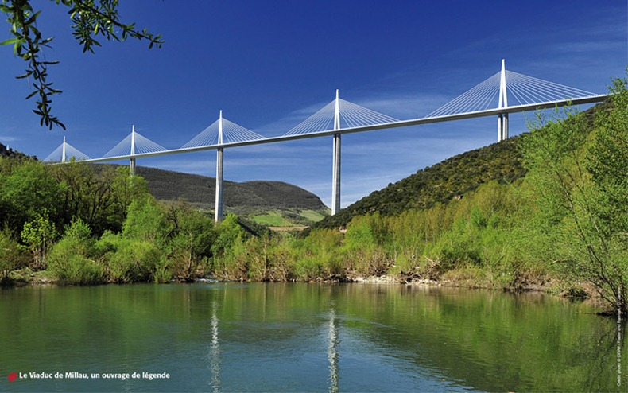

Байлонг, известен още като "Асансьорът на стоте дракона", представлява иновативна инженерна постижение и архитектурно чудо, намиращо се в природен парк Чжанджиацзие, провинция Хуна, Китай. Този уникален атракцион е върхова точка на съвременната технология, обединена с величествената природа на региона. Байлонг е вертикален асансьор, издигащ се високо върху стълб от карстова скала, която предоставя възможност за невероятни гледки към зашеметяващия природен пейзаж. Стълбът е интегриран в скалната формация, като съчетава съвременна инженерна изящност с природната красота на региона. Асансьорът на стоте дракона е не само технически феномен, но и атракция, предоставяща на посетителите възможността да се издигнат на височина от над 300 метра. Пътуването преминава през прозрачни стени, които позволяват на туристите да се насладят на зашеметяващите гледки, докато се изкачват. Атракцията е вписана в редицата с изключителни съоръжения в Китай и привлича туристи от цял свят, които искат да изживеят съчетанието на високотехнологичното със съхранената в природата красота на региона. Байлонг, "Асансьорът на стоте дракона", представлява изумителен пример за хармония между човешкото творчество и природната уникалност на Китай.
 На фона на нарастващите загрижености от изменението на климата и повишаването на морските равнища, "Проект Tide Barrier" се явява като иновативно и решително предприятие за защита на приморските общности. Този амбициозен проект, предприет в отговор на реалните заплахи от наводнения и наводнения, се фокусира върху изграждането на високотехнологичен бариерен систем, който да предпазва бреговите райони от въздействието на приливите. Проектът Tide Barrier използва иновативни инженерни решения, включително напреднали сензори, автоматизирани системи и високотехнологични материали, за да реагира бързо и ефективно на предстоящите морски промени. Целта е да се предотврати навлизането на водата и тежките наводнения, които могат да причинят сериозни щети на обитаемите райони и икономиката. Техническите компоненти на Tide Barrier включват система за ранно предупреждение, която следи приливните вълни и прогнозира опасните морски условия. Автоматизирани бариери с висока прочност се активират, когато сензорите регистрират риск от наводнение, образувайки нещо като "интелигентна" защита срещу приливите. Проектът не само че предоставя защита на бреговете, но и взема под внимание устойчивостта и екологичната съвместимост. Отговаряйки на нуждите на съвременната общност и изискванията на изменящата се природа, Tide Barrier съчетава в себе си технологичен прогрес и отговорност към околната среда. С "Проект Tide Barrier" се открива нова глава в иновациите за опазване на бреговете и се поставя основа за устойчиви и сигурни общности пред предизвикателствата на изменението на климата.
 Мостът Millau Viaduct е инженерно произведение, което впечатлява с величествената си структура и иновативен дизайн. Разположен в региона на Миди-Пиринеи във Франция, този мост се издига между високите върхове на планината Масиф Централ и представлява мостова конструкция от невиждани размери и сложност. Millau Viaduct е завършен през 2004 г., а архитектурното му решение е дело на известния френски инженер Мишел Вирланд и архитекта Норман Фостър. Мостът има обща дължина от около 2,5 км и височина от 343 м, като това го прави най-високият мост в света, изпреварвайки дори и турската структура Yavuz Sultan Selim Bridge. Millau Viaduct е изграден с цел подобряване на транспортната свързаност в региона и облекчаване на трафика по населените райони. Използването на високопроизводителни материали и напредъчни строителни технологии допринася за неговата изключителна стабилност и устойчивост. Мостът Millau Viaduct не е само инженерно произведение, но и върховен пример за съчетание на функционалност и естетика. Своето стремеж към иновации и внимание към детайла го правят не само инженерен триумф, но и архитектурно бижу, което привлича погледите и възхищението на посетителите от цял свят.
 